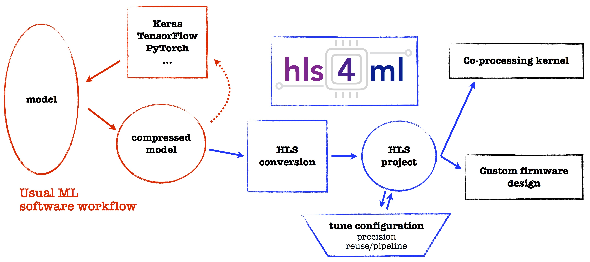

Concepts
[Under Construction, for more information see References]
The goal of hls4ml is to provide an efficient and fast translation of machine learning models.
The resulting HLS project can be then used to produce an IP which can be plugged into more complex designs or be used to create a kernal for CPU co-processing.
The workflow for hls4ml is illustrated below.

Models from open-source packages for training machine learning algorithms are translated into an HLS implementation. The user has freedom to define many of the parameters of their algorithm to best suit their needs.
The user can control aspects of their model such as:
- size/compression - though not explictly part of the hls4ml package, this is an important optimization to efficiently use the FPGA resources
- precision - define the precision of the calculations in your model
- dataflow/resource reuse - control parallel or serial model implementations with varying levels of pipelining
The hls4ml package enables fast prototyping of a machine learning algorithm implementation in FPGAs, greatly reducing the time to results and giving the user intuition for how to best design a machine learning algorithm for their application while balancing performance, resource utilization and latency requirements.